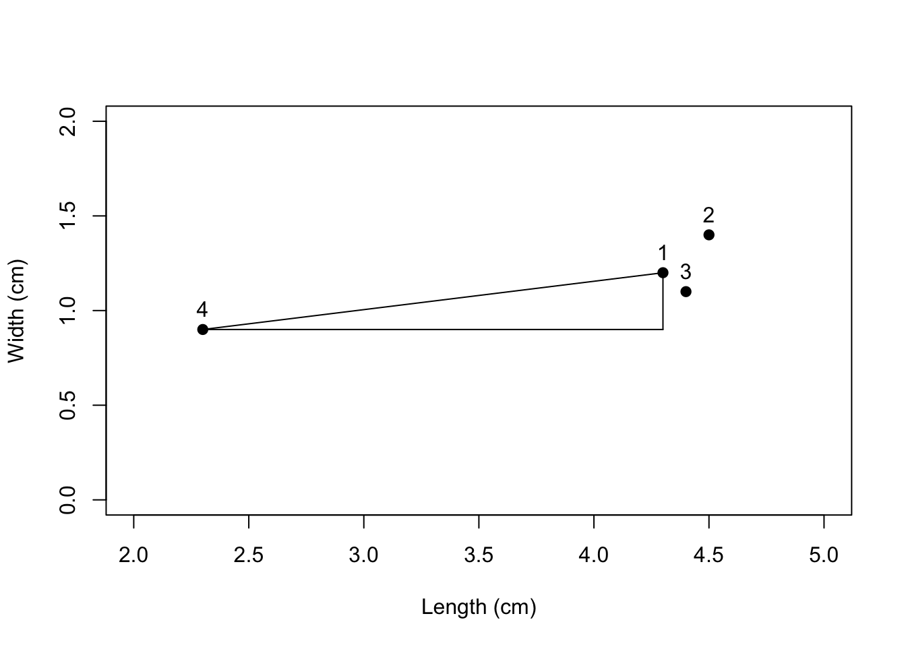

20 Similarities Between Cases (Ch. 22)
You’ll find the Ixcaquixtla data in Drennan_2009_Table21-1.csv.
ixcaq <- read.csv("data/Drennan_datasets/Drennan_2009_Table21-1.csv", header=T)
knitr::kable(ixcaq, "html") %>%
kableExtra::kable_styling(full_width = F)| Household.Unit | Bowls…of.Sherds | Decoration…of.Sherds | Energy.Invested.in.Burials | Mace.Heads | Fauna.Sherd.Ratio | Platform | Shell.Sherd.Ratio | Wasters…of.Sherds | Debitage…of.Lithics | Obsidian…of.Lithics |
|---|---|---|---|---|---|---|---|---|---|---|
| 1 | 0.25 | 0.03 | 2 | 0 | 0.32 | 0 | 0.000 | 0.000 | 0.79 | 0.00 |
| 2 | 0.37 | 0.07 | 3 | 0 | 0.55 | 0 | 0.000 | 0.000 | 0.35 | 0.00 |
| 3 | 0.15 | 0.01 | 1 | 1 | 0.10 | 1 | 0.008 | 0.000 | 0.32 | 0.00 |
| 4 | 0.19 | 0.01 | 2 | 0 | 0.20 | 0 | 0.000 | 0.000 | 0.26 | 0.00 |
| 5 | 0.35 | 0.04 | 3 | 0 | 0.57 | 0 | 0.000 | 0.000 | 0.69 | 0.00 |
| 6 | 0.21 | 0.01 | 1 | 0 | 0.13 | 1 | 0.000 | 0.000 | 0.31 | 0.12 |
| 7 | 0.24 | 0.01 | 1 | 0 | 0.19 | 0 | 0.000 | 0.000 | 0.86 | 0.00 |
| 8 | 0.20 | 0.05 | 2 | 0 | 0.28 | 0 | 0.000 | 0.016 | 0.19 | 0.00 |
| 9 | 0.49 | 0.09 | 3 | 0 | 0.48 | 0 | 0.000 | 0.000 | 0.28 | 0.00 |
| 10 | 0.23 | 0.02 | 2 | 0 | 0.24 | 0 | 0.000 | 0.000 | 0.29 | 0.00 |
| 11 | 0.26 | 0.02 | 2 | 1 | 0.21 | 1 | 0.000 | 0.021 | 0.31 | 0.13 |
| 12 | 0.19 | 0.00 | 1 | 0 | 0.15 | 0 | 0.000 | 0.000 | 0.46 | 0.00 |
| 13 | 0.31 | 0.04 | 2 | 0 | 0.37 | 1 | 0.000 | 0.025 | 0.26 | 0.10 |
| 14 | 0.45 | 0.05 | 3 | 1 | 0.60 | 1 | 0.009 | 0.000 | 0.65 | 0.00 |
| 15 | 0.48 | 0.03 | 3 | 0 | 0.43 | 0 | 0.000 | 0.000 | 0.43 | 0.00 |
| 16 | 0.09 | 0.00 | 1 | 1 | 0.15 | 0 | 0.005 | 0.000 | 0.29 | 0.00 |
| 17 | 0.11 | 0.02 | 1 | 0 | 0.09 | 0 | 0.000 | 0.014 | 0.28 | 0.00 |
| 18 | 0.29 | 0.02 | 2 | 1 | 0.25 | 1 | 0.007 | 0.000 | 0.87 | 0.00 |
| 19 | 0.28 | 0.03 | 2 | 1 | 0.40 | 0 | 0.000 | 0.000 | 0.31 | 0.00 |
| 20 | 0.19 | 0.03 | 1 | 0 | 0.05 | 0 | 0.000 | 0.000 | 0.95 | 0.00 |
As Drennan points out (p267), there are several different kinds of variables in this table. Consequently, it’s a good idea to make sure that R is reading variables in the ways that we would like. The ‘Energy Invested in Burials’, ‘Mace Heads’, and ‘Platform’ columns are all categorical variables that use numeric codes. We want R to treat those as factors, and may as well recode them in the process, so that we can more easily tell what we’re dealing with. Recoding is a very useful thing to be able to do, and there are various ways to do it. One of the simplest uses ifelse(), while dplyr::recode (and dplyr::recode_factor) offers a more sophisticated alternative (as does car::recode). These have been superseded by dplyr::case_when but still run.
## 'data.frame': 20 obs. of 11 variables:
## $ Household.Unit : int 1 2 3 4 5 6 7 8 9 10 ...
## $ Bowls...of.Sherds : num 0.25 0.37 0.15 0.19 0.35 0.21 0.24 0.2 0.49 0.23 ...
## $ Decoration...of.Sherds : num 0.03 0.07 0.01 0.01 0.04 0.01 0.01 0.05 0.09 0.02 ...
## $ Energy.Invested.in.Burials: int 2 3 1 2 3 1 1 2 3 2 ...
## $ Mace.Heads : int 0 0 1 0 0 0 0 0 0 0 ...
## $ Fauna.Sherd.Ratio : num 0.32 0.55 0.1 0.2 0.57 0.13 0.19 0.28 0.48 0.24 ...
## $ Platform : int 0 0 1 0 0 1 0 0 0 0 ...
## $ Shell.Sherd.Ratio : num 0 0 0.008 0 0 0 0 0 0 0 ...
## $ Wasters...of.Sherds : num 0 0 0 0 0 0 0 0.016 0 0 ...
## $ Debitage...of.Lithics : num 0.79 0.35 0.32 0.26 0.69 0.31 0.86 0.19 0.28 0.29 ...
## $ Obsidian...of.Lithics : num 0 0 0 0 0 0.12 0 0 0 0 ...ixcaq$Mace.Heads <- ifelse(ixcaq$Mace.Heads == 0, "Absent", "Present")
ixcaq$Platform <- ifelse(ixcaq$Platform == 0, "Absent", "Present")
ixcaq$Energy.Invested.in.Burials <- dplyr::recode_factor(ixcaq$Energy.Invested.in.Burials,
`1` = "low", `2` = "medium", `3` = "high")
str(ixcaq) #note that ixcaq$Mace.Heads and ixcaq$Platform are now *character* vectors## 'data.frame': 20 obs. of 11 variables:
## $ Household.Unit : int 1 2 3 4 5 6 7 8 9 10 ...
## $ Bowls...of.Sherds : num 0.25 0.37 0.15 0.19 0.35 0.21 0.24 0.2 0.49 0.23 ...
## $ Decoration...of.Sherds : num 0.03 0.07 0.01 0.01 0.04 0.01 0.01 0.05 0.09 0.02 ...
## $ Energy.Invested.in.Burials: Factor w/ 3 levels "low","medium",..: 2 3 1 2 3 1 1 2 3 2 ...
## $ Mace.Heads : chr "Absent" "Absent" "Present" "Absent" ...
## $ Fauna.Sherd.Ratio : num 0.32 0.55 0.1 0.2 0.57 0.13 0.19 0.28 0.48 0.24 ...
## $ Platform : chr "Absent" "Absent" "Present" "Absent" ...
## $ Shell.Sherd.Ratio : num 0 0 0.008 0 0 0 0 0 0 0 ...
## $ Wasters...of.Sherds : num 0 0 0 0 0 0 0 0.016 0 0 ...
## $ Debitage...of.Lithics : num 0.79 0.35 0.32 0.26 0.69 0.31 0.86 0.19 0.28 0.29 ...
## $ Obsidian...of.Lithics : num 0 0 0 0 0 0.12 0 0 0 0 ...#convert to factor, ordering so that 'Present' comes before 'Absent'
ixcaq$Mace.Heads <- factor(ixcaq$Mace.Heads, levels = c("Present", "Absent"))
ixcaq$Platform <- factor(ixcaq$Platform, levels = c("Present", "Absent"))20.1 Euclidean Distance
The sample projectile point measurements in Table 22.1 form the basis for the simple Euclidean distance examples.
PPoints <- data.frame(Length = c(4.3, 4.5, 4.4, 2.3), Width = c(1.2, 1.4, 1.1, 0.9),
Thickness = c(0.35, 0.55, 0.37, 0.3), Weight = c(75, 80, 80, 75))Euclidean distance is easy to visualize in two dimensions, as Drennan illustrates with Fig. 22.1.
plot(PPoints$Length, PPoints$Width, xlim = c(2,5), ylim = c(0,2), xlab = "Length (cm)",
ylab = "Width (cm)", pch=19)
text(PPoints$Length, PPoints$Width, labels=rownames(PPoints), pos = 3)#label the points
segments(x0 = PPoints$Length[1], x1 = PPoints$Length[4], y0 = PPoints$Width[1],
y1 = PPoints$Width[4]) #connect the dots
segments(x0 = PPoints$Length[4], x1 = PPoints$Length[1], y0 = PPoints$Width[4],
y1 = PPoints$Width[4]) #draw long leg of the triangle
segments(x0 = PPoints$Length[1], x1 = PPoints$Length[1], y0 = PPoints$Width[1],
y1 = PPoints$Width[4]) #draw short leg of the triangle
You can make your geometry teacher proud by calculating the length of the line between points 1 and 4, which is the hypotenuse of the right triangle that we just plotted. That distance (2.02cm, Drennan calculates) has an analogue if we plot points 1 and 4 in three dimensions, or in n dimensions.
For any two cases (rows in a table, generally), we can calculate, for all the variables we have, a single measurement of the distance between cases. This distance is the square root of the sum of the squared differences between the values for each variable: \[D_{1,2}=\sqrt{\Sigma(X_{j,1}-X_{j,2})^2}\]
where \(D_{1,2}\) is the Euclidean distance between cases 1 and 2, \(X_{j,1}\) is the value of the jth variable for case 1, and \(X_{j,2}\) is the value of hte jth variable for case 2.
Calculating this for the whole table of projectile points produces a matrix that gives the distance between any two cases (as in Table 22.2); R does this using dist(), which defaults to Euclidean distance but can also calculate other measures (see ?dist).
## 1 2 3
## 2 5.0119856
## 3 5.0020396 0.3638681
## 4 2.0229928 5.4911292 5.4272369This is a dissimilarity matrix, which is to say that larger values indicate that points are more different from one another (i.e., points 2 and 4 are the most different).
20.1.1 Euclidean Distance with Standardized Variables
Drennan discusses (pp274-275) the very good reasons why simply calculating a Euclidean distance matrix may not produce satisfying results. The basic issue is that a centimeter of difference in thickness should matter much more than a centimeter of difference in length, even though the units are the same: we want to be making comparisons while taking into account how meaningful the differences are.
We can address this by standardizing the variables by removing the level and spread as we did in Ch.4. This is quite simple in R with scale(), which we can use to produce Table 22.3. We can then use dist() as above, but on the scaled version of our table, to produce Table 22.4.
## Length Width Thickness Weight
## [1,] 0.4035437 0.2401922 -0.3897333 -0.8660254
## [2,] 0.5934466 1.2009612 1.4443059 0.8660254
## [3,] 0.4984951 -0.2401922 -0.2063294 0.8660254
## [4,] -1.4954853 -1.2009612 -0.8482432 -0.8660254
## attr(,"scaled:center")
## Length Width Thickness Weight
## 3.8750 1.1500 0.3925 77.5000
## attr(,"scaled:scale")
## Length Width Thickness Weight
## 1.0531698 0.2081666 0.1090489 2.8867513## 1 2 3
## 2 2.706075
## 3 1.809260 2.193293
## 4 2.427646 4.288199 2.882896In the vast majority of multivariate analyses, there is much to be gained by standardizing measurements before calculating Euclidean distances, and there is seldom anything to be lost by doing it. (Drennan p276)
20.1.2 When To Use Euclidean Distance
Categorical variables with more than two categories pose problems for Euclidean distance measures. Consider the ‘Wall Construction’ variable that Drennan suggests (p267) that we might include in the Ixcaquixtla dataset.
WallConstruction <- c(rep("wattle and daub", 7), rep("wood plank", 7),
rep("mud brick", 6))
str(WallConstruction) #produces a character vector## chr [1:20] "wattle and daub" "wattle and daub" "wattle and daub" ...## [1] wattle and daub wattle and daub wattle and daub wattle and daub
## [5] wattle and daub wattle and daub wattle and daub wood plank
## [9] wood plank wood plank wood plank wood plank
## [13] wood plank wood plank mud brick mud brick
## [17] mud brick mud brick mud brick mud brick
## Levels: mud brick wattle and daub wood plankWe now have a factor with three levels, and could code the categories numerically easily enough. But suppose we code them 1, 2, and 3 - is ‘mud brick’ really twice as different from ‘wattle and daub’ as ‘wood plank’ is?
Drennan suggests breaking this variable into three, each a presence/absence variable, as a solution (in case you’re desperate to apply a Euclidean distance measure to data like these). You can apply the same techniques we used in recoding data above (ifelse() and/or recode(), for instance) to do this. In either case, we would put our vector in a data frame first, so that we can add columns. We won’t pursue this, but it’s a useful technique to be aware of.
20.2 Presence/Absence Variables: Simple Matching and Jaccard’s Coefficients of Similarity
For presence/absence variables, various alternative measures exist. Drennan explores these using a small set of data on sherd attributes (Table 22.6).
sherds <- data.frame(Slip = c("Present", "Absent", "Absent", "Present", "Present",
"Present", "Present"),
Red.Paint = c("Absent", "Present", "Present", "Absent", "Present",
"Absent", "Absent"),
Incising = c("Absent", "Present", "Absent", "Present", "Absent",
"Present", "Present"),
Punctations = c("Absent", "Absent", "Absent", "Absent", "Present",
"Absent", "Absent"),
Quartz = c("Absent", "Absent", "Absent", "Absent", "Absent", "Present",
"Present"),
Mica = c("Absent", "Absent", "Present", "Present", "Absent",
"Absent", "Absent"))
kable_classic(kable(sherds), full_width = F)| Slip | Red.Paint | Incising | Punctations | Quartz | Mica |
|---|---|---|---|---|---|
| Present | Absent | Absent | Absent | Absent | Absent |
| Absent | Present | Present | Absent | Absent | Absent |
| Absent | Present | Absent | Absent | Absent | Present |
| Present | Absent | Present | Absent | Absent | Present |
| Present | Present | Absent | Present | Absent | Absent |
| Present | Absent | Present | Absent | Present | Absent |
| Present | Absent | Present | Absent | Present | Absent |
#reorder levels
sherds <- lapply(sherds, function(x) ordered(x, levels = c("Present", "Absent")))
sherds <- do.call(data.frame, sherds)Drennan refers to Table 22.6 as a cross-tabulation. These are often also called ‘contingency tables’, and can consist of counts rather than simple presence/absence data; these are the basis of (\(\chi^2\) analysis, though Drennan does not describe them in such terms. Contingency tables are the basis of other multivariate techniques, and we will discuss them in more detail when we cover correspondence analysis. For more on count data and contingency tables, see here.
There are a variety of ways of calculating binary distance measures; here we’ll use simba::sim(), which will calculate both the Simple Matching Coefficient and Jaccard’s Coefficient (among many other measures). To use sim() we will need to convert the factors in our dataset into numeric values. We can do that using a baseR function called data.matrix(), and then can calculate both coefficients of similarity, matching Table 22.7 and Table 22.8.
sherds_bin <- data.matrix(sherds)
sherds_bin <- ifelse(sherds_bin == 2, 0, 1) #change '2's to '0's
#remotes::install_github("cran/simba")
library(simba)
sim(sherds_bin, method="simplematching")## 1 2 3 4 5 6
## 2 0.5000000
## 3 0.5000000 0.6666667
## 4 0.6666667 0.5000000 0.5000000
## 5 0.6666667 0.5000000 0.5000000 0.3333333
## 6 0.6666667 0.5000000 0.1666667 0.6666667 0.3333333
## 7 0.6666667 0.5000000 0.1666667 0.6666667 0.3333333 1.0000000## 1 2 3 4 5 6
## 2 0.0000000
## 3 0.0000000 0.3333333
## 4 0.3333333 0.2500000 0.2500000
## 5 0.3333333 0.2500000 0.2500000 0.2000000
## 6 0.3333333 0.2500000 0.0000000 0.5000000 0.2000000
## 7 0.3333333 0.2500000 0.0000000 0.5000000 0.2000000 1.000000020.3 Mixed Variables: Gower’s Coefficient
It should be obvious that neither Euclidean distance nor the similarity coefficients covered above will work with datasets that consist of combinations of different kinds of variables. Fortunately - since describing the real world often does involve combining different kinds of variables - there are measures for assessing similarity of such datsets. Gower’s Coefficient can be calculated by cluster::daisy(), which will guess at variable types for the different columns if we don’t specify them (which we should; see ?daisy). To make sure that our binary factors behave as we would like, it’s safest to convert them back to numbers. Note that because daisy() calculates dissimilarities, we subtract the result from 1 to match Table 22.9.
library(cluster)
ixcaq$Mace.Heads <- ifelse(ixcaq$Mace.Heads == "Present", 1, 0)
ixcaq$Platform <- ifelse(ixcaq$Platform == "Present", 1, 0)
ixcaq_gower <- 1 - daisy(ixcaq[,-1], metric = "gower", type =
list(ordratio = 3, asymm = c(4, 6)))
ixcaq_gower #still labeled 'Dissimilarities' - but now are 'Similarities' (due to subtracting from 1)## Dissimilarities :
## 1 2 3 4 5 6 7
## 2 0.7198033
## 3 0.5120468 0.4036789
## 4 0.8390284 0.7035686 0.6250346
## 5 0.8190956 0.8916168 0.3936390 0.6910187
## 6 0.5864075 0.4659987 0.6970331 0.7037623 0.4548433
## 7 0.8655386 0.5853419 0.6011948 0.8209181 0.6846342 0.6854609
## 8 0.7688221 0.6889178 0.4903341 0.8316245 0.6485902 0.5596507 0.6587925
## 9 0.6589215 0.9073000 0.3628682 0.6657131 0.7989168 0.4235774 0.5244601
## 10 0.8794425 0.7439826 0.6005981 0.9595860 0.7314327 0.6877218 0.8153725
## 11 0.5192310 0.4158631 0.6171842 0.5789918 0.4058232 0.7201511 0.4738841
## 12 0.7841707 0.6125266 0.6624880 0.8793527 0.6361610 0.7424533 0.8956057
## 13 0.5757090 0.5335269 0.4538691 0.5875939 0.5223715 0.6956297 0.4561877
## 14 0.5084476 0.6092132 0.6351143 0.4165125 0.6531712 0.3730565 0.4008785
## 15 0.7814145 0.8696388 0.4319152 0.7388640 0.8709048 0.4973724 0.6469531
## 16 0.5826806 0.4622718 0.8275173 0.7169945 0.4511164 0.6047577 0.6817340
## 17 0.6737068 0.5382469 0.6269187 0.8003216 0.5256971 0.6715123 0.7573641
## 18 0.6778575 0.4737002 0.7931366 0.5967570 0.5531340 0.5533010 0.6363862
## 19 0.7942185 0.7227996 0.6505276 0.7914835 0.7116442 0.5688792 0.6746973
## 20 0.8310706 0.5508739 0.5869032 0.7621445 0.6501661 0.6463490 0.9099764
## 8 9 10 11 12 13 14
## 2
## 3
## 4
## 5
## 6
## 7
## 8
## 9 0.6510623
## 10 0.8434201 0.7028376
## 11 0.6031499 0.3776839 0.6004139
## 12 0.7109772 0.5516447 0.8488072 0.4956318
## 13 0.6921018 0.4998775 0.6147455 0.7905310 0.4803519
## 14 0.4047919 0.5750532 0.4488437 0.4695207 0.3726263 0.4338318
## 15 0.6686576 0.8775070 0.7792780 0.4440994 0.6741378 0.5402092 0.6104213
## 16 0.5673274 0.4256985 0.6898429 0.5321816 0.7745289 0.3741296 0.4808134
## 17 0.7997239 0.5003914 0.7942644 0.5587344 0.8339806 0.5592378 0.2842552
## 18 0.5074607 0.4249947 0.6290883 0.6497653 0.5528708 0.5159956 0.7618607
## 19 0.7290779 0.6803783 0.8274071 0.6653434 0.6988614 0.5924323 0.6041773
## 20 0.6493245 0.4899920 0.7593767 0.4240875 0.8550140 0.4255495 0.3733041
## 15 16 17 18 19
## 2
## 3
## 4
## 5
## 6
## 7
## 8
## 9
## 10
## 11
## 12
## 13
## 14
## 15
## 16 0.4936455
## 17 0.5735423 0.7211082
## 18 0.5229891 0.6610579 0.4644997
## 19 0.7541733 0.7394722 0.6445310 0.7076542
## 20 0.6124850 0.6456524 0.7718228 0.5892212 0.6440590
##
## Metric : mixed ; Types = I, I, T, A, I, A, I, I, I, I
## Number of objects : 2020.4 Problem Set
Using the similarity matrix that you’ve created for the Ixcaquixtla households, consider the following:
What would it tell you if all the scores in your matrix were similar? What does it mean that they vary? What kind of patterned variability might you reasonably expect (think about scenarios, for instance, where you’d expect a clear divide between rich and poor households, or between households inhabited by three different ethnic groups)?
You can group the scores and classify them either by hand or automatically. After looking at
?cutto figure out what the function does, try:
#first make similarity matrix into a full matrix
ixcaq_gower_matrix <- ifelse(as.matrix(ixcaq_gower)==0, 1, as.matrix(ixcaq_gower))
#then change to factors using cut()
ixcaq_gower_classed <- cut(ixcaq_gower_matrix, breaks=c(0,.5,.75,.99,1),
labels=c("least similar", "moderately similar","most similar",
"same"))
#and then put back into a matrix to match the one you started with
ixcaq_gower_classed_mat <- matrix(ixcaq_gower_classed, nrow=20, ncol=20)Your new matrix is just like the similarity matrix of Gower coefficients (although it’s a full matrix, because working with half-empty matrices is difficult), but has replaced the numerical coefficients with (arbitrary) categories.
In order to more easily identify which households fall in this group, we can separate out the houses from the “most similar” class.
sim_households <- which(ixcaq_gower_classed_mat == "most similar", arr.ind = T)
sim_households <- t(apply(sim_households, 1, sort)) # sorts rows
sim_households <- unique(sim_households) #removes duplicatesThis leaves you with a list of 42 pairs of households that fell into the “most similar” category that you defined above.
You can use unique(as.vector(sim_households)) to find out that 19 households are represented here, which is to say that every household but one is very similar to some other household. Without necessarily going through the process, discuss how you might try to reach some more interesting conclusions than that. How - conceptually, not with respect to the coding in R - would you look for patterns of interest (and what might those patterns might be) in sim_households? How might you change either the classification process or the categories you extract in pursuit of this goal?